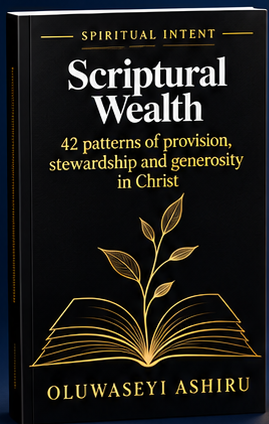
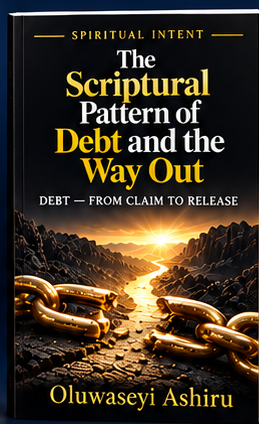
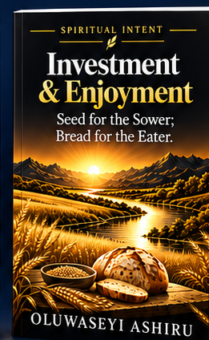

Four books. One collection.
BOOK 01

Scriptural Wealth
Wealth and faithful stewardship under Christ.
BOOK 02
How to Receive From God
Receiving from God and understanding the Source.
BOOK 03

The Scriptural Pattern of Debt and the Way Out
A scriptural examination of debt and the way out.
BOOK 04

Investment & Enjoyment
Seed for sowing, bread for eating, and wise stewardship.
The four covers above are extracted directly from the existing Spiritual Intent source artwork. Availability and prices will be announced only after confirmation. The 17 December 2026 launch is a planning target, not a confirmed public offer.